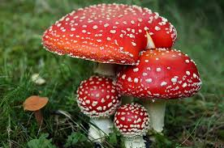
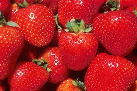
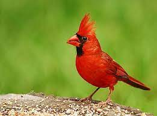

Red
Interesting facts about the color Orange
- Seeing the color red can make your heart beat faster.
- As few as two percent of people in the United States have red hair.
- The color red doesn’t really make bulls angry; they are color-blind.
- Red also means “Beautiful” in Russian.
Roses are red and here are some red facts


